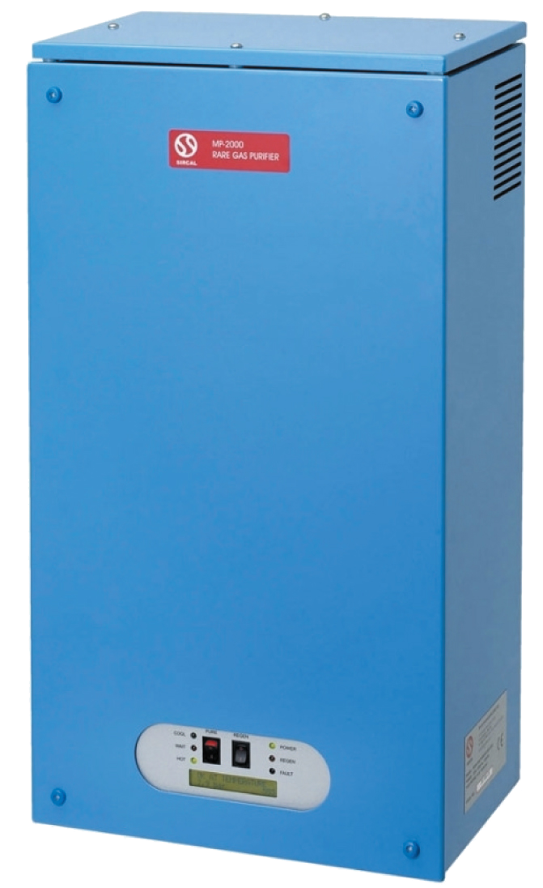

Instrumenty do oczyszczania rzadkich gazów
Sircal · MP-2000 · PD-2012
Dostarczamy ocieplane oczyszczacze gazu Heated Getter Gas Purifiers firmy Sircal do rzadkich gazów, takich jak argon, hel, neon, ksenon i krypton.
Instrumenty do oczyszczania rzadkich gazów firmy Sircal są cenione na całym świecie za swoją niezawodność i doskonałość techniczną.
- Ar · He · Ne · Xe · Kr
- Sircal, od 1981 roku

Założona w 1981 roku firma Sircal Instruments (UK) Ltd specjalizuje się w systemach oczyszczania rzadkich gazów, zwłaszcza do analizy metali za pomocą techniki spektrometrii łuku iskrowego. Z ponad 30-letnim doświadczeniem projektują, produkują i dystrybuują oczyszczacze rzadkich gazów na całym świecie.
Nabyta przez Fire Testing Technology Limited (FTT) w 2010 roku i będąca filią Judges Scientific plc, Sircal korzysta z obszernej pomocy w zakresie B+R, produkcji i obsługi posprzedażnej.
Z siedzibą w East Grinstead, Wielka Brytania, znani są ze swoich rygorystycznych standardów jakości i konkurencyjnych cen, co czyni ich światowym liderem w oczyszczaniu argonu w punktach użycia.
Oczyszczacz rzadkich gazów model MP-2000
Wprowadzony na rynek w 2000 roku, a teraz dodatkowo ulepszony o nowy obwód mikrokontrolera z wyświetlaczem LCD i opcjonalnym czujnikiem ciśnienia (od marca 2009 roku). MP2000 jest zaprojektowany do dostarczania oczyszczonego argonu, helu lub innego rzadkiego gazu w punkcie użycia.
Dowiedz się więcej

PD-2012 Suszarka do rzadkich gazów
Suszaraka do rzadkich gazów PD-2012 to przenośna, samodzielna jednostka do suszenia argonu lub dowolnego rzadkiego gazu: helu, neonu, ksenonu i kryptonu, w laboratoriach lub na miejscu, w linii między źródłem gazu a urządzeniem, np. Spektrometrami emisyjnymi optycznego iskrzenia łuku.
Poproś o wycenę